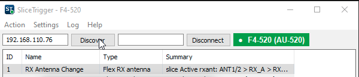

Keep your hands on the keyboard.
N1MM Logger+ function keys for your FlexRadio and station gear. Switch receive antennas, fire the voice keyer and drive relays from one key press, without reaching for the mouse.
Early release · open source
Every time you reach for the mouse to click something in SmartSDR you lose rhythm, and sometimes a QSO. SliceTrigger sits next to N1MM, keeps a connection to your radio, and runs an action the moment N1MM sends a function key to it.
Step the active slice out to your receive antennas and back: ANT1 → RX_A → RX_B → ANT1. Compare a weak one on the Beverage, then press once more to return to your main antenna. TX is never touched.
Play any of the radio's 12 DVK memories from a function key. Press ESC, the key you already use in N1MM, and playback stops.
Send any SmartSDR command to the active slice, such as the noise blanker, filters or AGC. Chain several on one key with ;.
Switch KMtronic network relays, or send an HTTP request or raw TCP data to antenna switches, amplifiers and anything else on your LAN.
A small window with a green, amber or red status and the radio's name, plus a matching badge on the taskbar button. It reconnects by itself if the radio drops.
One click installs it to %APPDATA% with a desktop shortcut. Copy N1MM macro writes the function key line for you, and Check for updates fetches new versions from GitHub.
Tick the antennas you want to visit. Home is whichever main antenna the slice was on, and the press after the last one always brings you back.
Switch the slice to ANT2 in SmartSDR and ANT2 becomes home. XVTA and XVTB can be part of the loop too, and antennas the radio doesn't offer on that slice are skipped.
The status next to Connect, and the badge on the taskbar button, tell you whether a key press will land.
Settings and actions are saved in %APPDATA%\SliceTrigger.
Download SliceTrigger.exe and run it. Windows SmartScreen may ask once, because the exe is not code-signed. Choose Settings › Install .exe in %APPDATA%.
Start SmartSDR, then type the radio's IP address or press Discover, and press Connect. The status turns green.
Action › Add, try it with Test, then Copy N1MM macro and paste the line into N1MM's function key editor. Change F1 to the key you want.
# an N1MM function key line, as Copy N1MM macro writes it
F6 RX Antenna,"C:\Users\you\AppData\Roaming\SliceTrigger\SliceTrigger.exe fire 1"
N1MM can't run an exe from a path that contains a space. If your Windows user name has one, keep SliceTrigger in a folder such as C:\Ham instead.
An early release, used in the shack with N1MM Logger+. Here is where it stands.
For the curious and for anyone writing their own client. The voice keyer commands come from two open-source Flex clients, AetherSDR and StationA, not from FlexRadio documentation; the full list of assumptions is in the README.
| Step | What happens |
|---|---|
| Key press | N1MM runs SliceTrigger.exe fire 1. That copy sends GET http://127.0.0.1:8765/fire/1 to the running window and exits; nothing else on the network can reach the port. |
| Connect | TCP 4992, then sub client all, sub slice all, sub dvk all and info for the radio's name and model. A ping every 10 s keeps the link honest. |
| Active slice | The slice reporting active=1, never the TX slice. Status lines are partial, so key=value pairs are merged per slice. |
| RX antenna | slice set <index> rxant=RX_A, starting from the slice's current rxant and skipping anything not in its ant_list. |
| Voice keyer | dvk playback_start id=N to play, dvk playback_stop to stop. ESC is watched system-wide, never swallowed, and only acts while a memory is playing. |
Plain Go with walk for the native Windows UI. The Windows build cross-compiles from macOS or Linux, and no C compiler is needed.
# tests, including a mock Flex radio on a local port go test -race ./... # Windows exe, icon and VERSION file ./build.sh # or build.bat on Windows